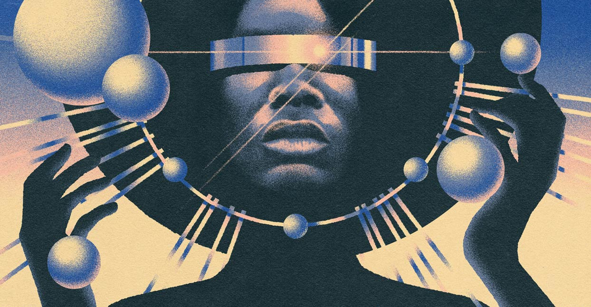

Afrofuturism
An insight into the afrofuturist movement.
The afrofuturism movement focuses on the intersection of the African diaspora culture with science and technology. It dates back to the 1990s and focuses on the blend of African iconography and technoculture. A term first born in the minds of thousands of enslaved Africans passing through the Middle Passage, it saw them dreaming of a society completely without the social or phsical bondage of oppression. It envisions the African diaspora achieving greatness without external influence.
How Afrofuturism is impacting history.
Afrofuturism is said to be a means to challenge what it means for Black people to be free on their own terms. It can be understood as a wide-range social, political and artistic movement that imagines a world where African-descended peoples and their cultures play a central role in the creation of that world. One artist that embraced the idea of afrofuturism was a musician named Sun Ra, fusing both jazz and elements of space in his work. Television shows such as Lovecraft Country explores themes of Afrofuturism as well as a prominent Black character in the show is transported to the future.

Afrofuturism today:
Today, new art installations and creative projects focused on the afrofuturist style have been making appearances all over. In November of 2021, the Metropolitan Museum of Art in New York opened Before Yesterday We Could Fly: An Afrofuturist Period Room, pictured below. Ekow Nimako, a Ghanian-Canadian artists tells a story about Mansa Abu Bakr II through usage of large LEGO environments completely in all black. The pieces are massive and envisions an Afrofuturist landscape made with fantastical detail. These pieces show dedication to the history and interpretation of the movement's message.

Copyright Create.It Inc. 2023